1 Erradicação da Pobreza
×

Objetivo 1
Erradicação da Pobreza
A ODS "Erradicação da Pobreza" é um objetivo que abrange a eliminação da pobreza em todas as suas dimensões, reconhecendo-a como um dos maiores desafios globais e uma condição que afeta o desenvolvimento humano, a dignidade e os direitos básicos.
Esse objetivo não apenas trata da falta de renda, mas também de outras necessidades essenciais como segurança alimentar, acesso à saúde, educação, moradia e saneamento.
A meta central é assegurar que todos, em especial os mais vulneráveis, possam viver de maneira digna e tenham oportunidades de melhorar suas condições de vida, promovendo assim uma sociedade mais justa e inclusiva.
Metas
- Erradicar a pobreza extrema para todas as pessoas, medida como pessoas vivendo com menos de US$ 1,25 por dia.
- Reduzir pelo menos pela metade a proporção de homens, mulheres e crianças de todas as idades que vivem na pobreza, em todas as suas dimensões, segundo as definições nacionais.
- Implementar sistemas de proteção social adequados e amplos para todos, incluindo mínimos sociais, e alcançar uma cobertura substancial dos pobres e vulneráveis.
- Assegurar que todos os homens e mulheres, especialmente os pobres e vulneráveis, tenham direitos iguais aos recursos econômicos, assim como o acesso a serviços básicos, propriedade e controle sobre a terra e outras formas de propriedade.
- Construir resiliência dos pobres e das pessoas em situação vulnerável e reduzir a sua exposição e vulnerabilidade a eventos extremos relacionados ao clima e outros choques econômicos, sociais e ambientais.